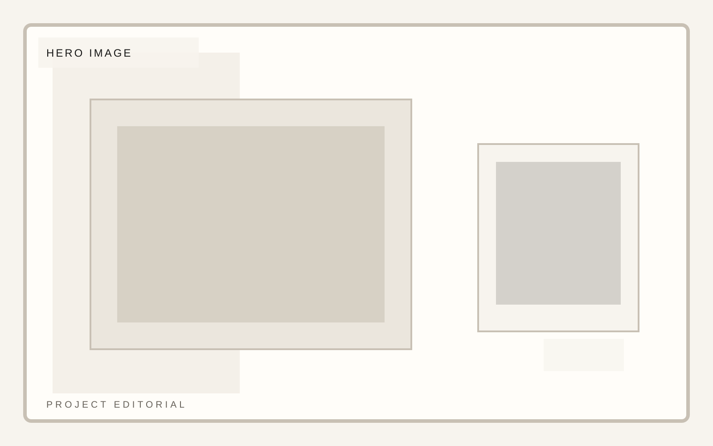
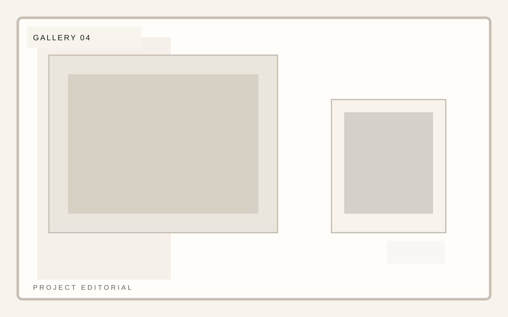
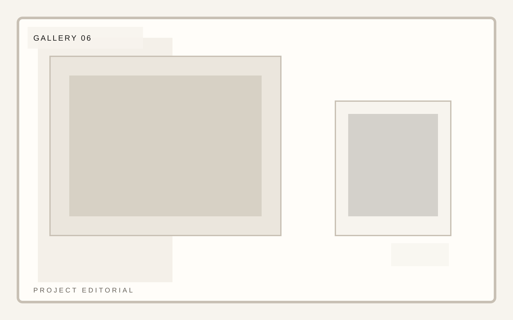

Practice
Editorial and portraiture

Photography portfolio
A portfolio template for photographers and image-makers who need rigorous composition, project rhythm, and clean editorial restraint. Project pages need room, silence, and a strong caption system.


Photography portfolio
Lena Vale uses gallery a to control image rhythm, quiet transitions, and caption discipline so the work reads as curated rather than dumped into a grid. This project editorial page stays consistent with the template system while giving this section its own visual weight.
Photography portfolio
Lena Vale uses gallery b to control image rhythm, quiet transitions, and caption discipline so the work reads as curated rather than dumped into a grid. This project editorial page stays consistent with the template system while giving this section its own visual weight.
Photography portfolio
Captions should carry context without crowding the page. The best portfolio pages feel generous with space and selective with language.
Photography portfolio
Lena Vale uses closing to control image rhythm, quiet transitions, and caption discipline so the work reads as curated rather than dumped into a grid. This project editorial page stays consistent with the template system while giving this section its own visual weight.